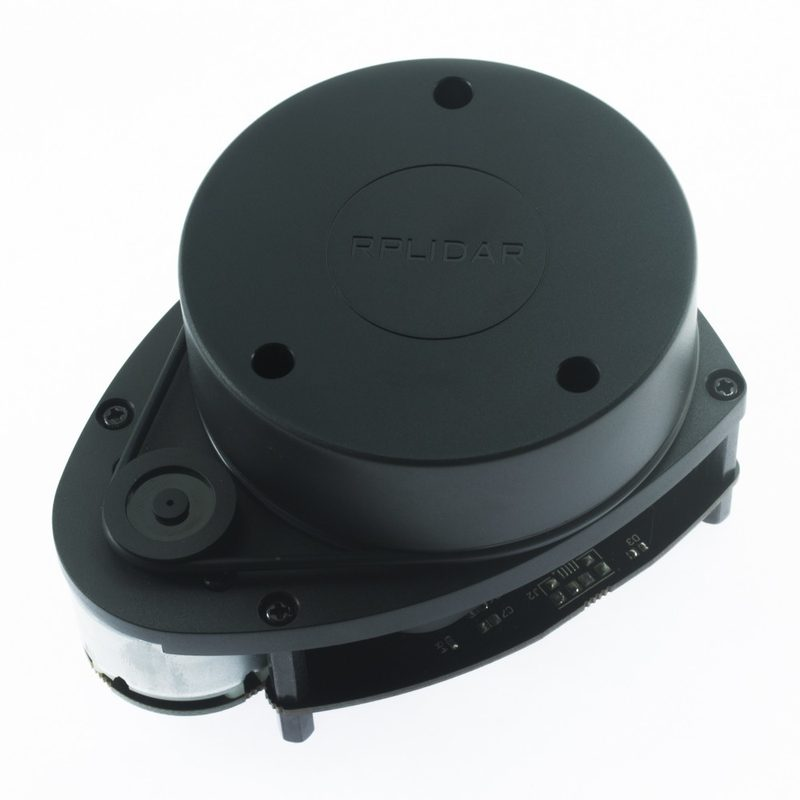
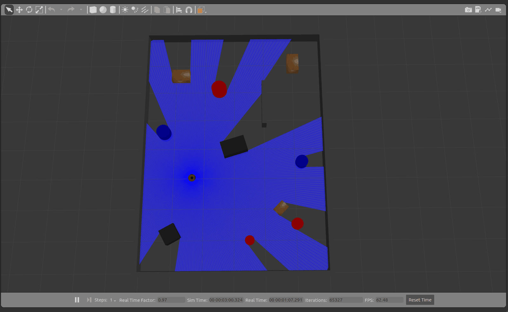
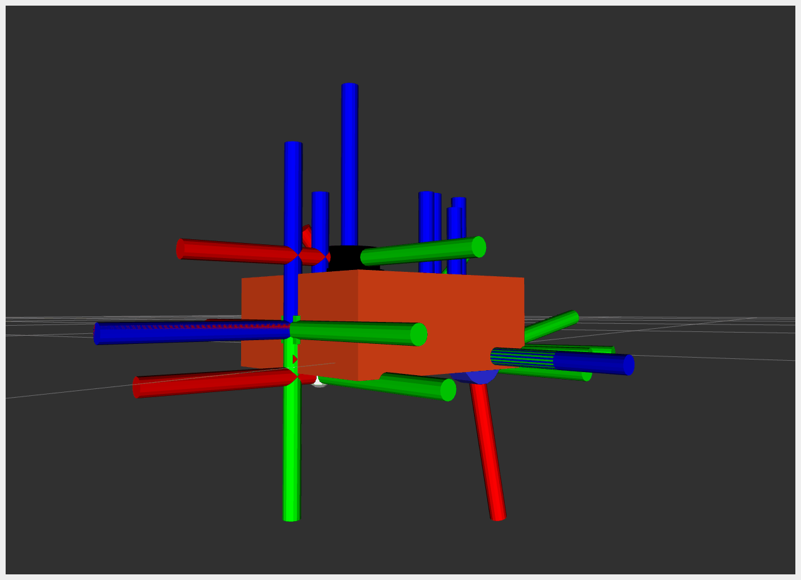
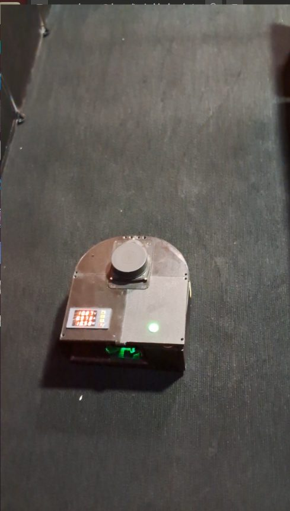
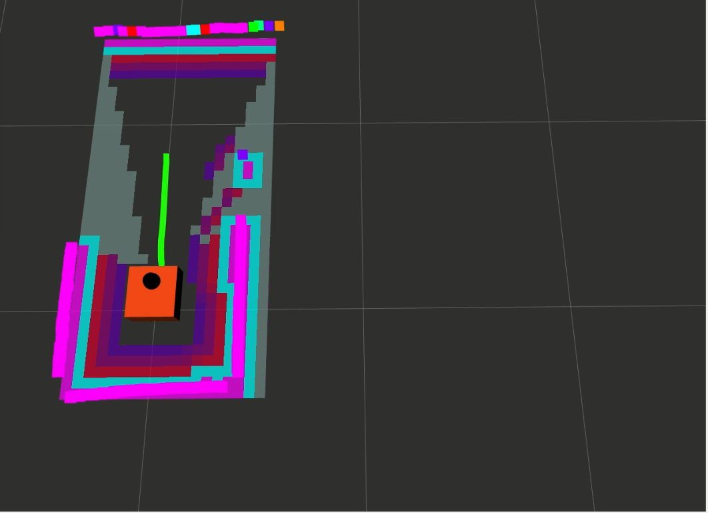

Para hacer un mapa hay que saber dónde está el robot, y para saber dónde está hace falta un mapa. Este tema explica cómo un láser que gira resuelve ese círculo, qué no alcanza a ver y cómo leer los mapas que construyó el robot real.
NivelLectura

El RPLidar A1, el único sensor de percepción del robot. Imagen de Slamtec.
El mismo espacio mapeado en cinco corridas
El LiDAR mide distancias girando en un plano horizontal. SLAM Toolbox junta esos barridos en un grafo de poses y, cuando el robot reconoce un lugar ya visto, reparte el error acumulado en todo el recorrido. En el robot real, las cinco exploraciones válidas mapearon casi la misma área libre, 3,50 m² en promedio, aunque su índice de cobertura varió mucho por una razón que vale la pena entender.
3,50 m²área libre mapeada en promedio, con dispersión de solo 0,03 m²
62,2 %índice medio de cobertura libre, un indicador relativo a la imagen
5 cmlado de cada celda del mapa
5 de 6ejecuciones que produjeron un mapa válido
Cómo ve un LiDAR 2D
Un LiDAR mide distancias con luz láser. Algunos miden el tiempo que tarda el pulso en volver 2 y otros, como el RPLidar A1 de este robot, usan triangulación óptica, es decir, calculan la distancia según el ángulo con que vuelve la luz reflejada 3. En un LiDAR 2D el emisor y el receptor giran sobre un eje vertical y entregan, en cada vuelta, pares de ángulo y distancia en un plano horizontal. Con eso se detectan paredes y obstáculos 1.
Lo que ve el láser, y lo que no
Interactivo
Arrastra el robot por la sala. Cambia a la vista del láser para ver el mundo como lo ve el robot.
Simulador del barrido de un LiDAR 2D. Necesita JavaScript.
Sus límites principales son dos. No detecta objetos fuera de su plano de barrido, como la cubierta de una mesa o una caja baja, y su medición se degrada ante superficies muy reflectantes, como el vidrio, o muy absorbentes, como una tela negra 1. El recinto de pruebas usa paneles opacos y de color, una elección razonable para un primer prototipo, pero que deja fuera los casos difíciles de una oficina real.

El barrido del láser simulado se corta en cada obstáculo y deja zonas de sombra detrás. Lo que el láser no ve, el mapa no lo tiene. Fig. 4.3 de la tesis.
El mapa como una rejilla
El mapa que construye el robot es una rejilla de ocupación. El plano se divide en celdas, aquí de 5 cm por lado, y cada una queda como libre, ocupada o desconocida 4. Al guardarse, el mapa es una imagen en escala de grises en la que lo claro es libre, lo oscuro es ocupado y el gris intermedio es desconocido 1.
Sobre esa rejilla trabajan los demás módulos. La navegación agrega un margen de seguridad alrededor de los obstáculos, y el explorador busca los bordes entre lo libre y lo desconocido. Ambos temas tienen su propia página.
Marcos de referencia: mapa, odometría y robot
Para decir dónde está algo hay que decir respecto de qué. ROS organiza las posiciones en un árbol de marcos de referencia, con convenciones comunes para todos los robots. El eje x apunta hacia adelante, el y hacia la izquierda y el z hacia arriba 5, y los marcos principales de un robot móvil son tres 6.
base_link viaja pegado al robot. odom es el marco de la odometría, continuo y sin saltos, pero que se aleja de la realidad con el tiempo. map es el marco del mapa, correcto a largo plazo, aunque puede corregirse a saltos cuando SLAM ajusta su estimación.
La cadena completa es map, odom, base_link y el marco del láser. El controlador diferencial publica el paso de odom a base_link con los encoders, y slam_toolbox publica el paso de map a odom 1. Esa última transformación absorbe la deriva de la odometría. Por eso un sesgo de 3,63 % en los encoders no se acumula en el mapa.

Los marcos del modelo en RViz. Cada trío de ejes rojo, verde y azul es un marco, con x, y y z. Captura del autor.
SLAM: mapear y ubicarse a la vez
SLAM resuelve el mapa y la posición al mismo tiempo 7. En el enfoque basado en grafos, cada nodo es una pose del robot y cada arista es una restricción entre dos poses, que sale de la odometría o de alinear dos barridos del láser, lo que se llama ajuste de barridos 1.
Grafo de poses y cierre de lazo
Interactivo
Mira cómo se abre la trayectoria por la deriva y cómo se corrige al cerrar el lazo.
Grafo de poses con y sin cierre de lazo.
Cuando el robot vuelve a ver una zona que ya conocía, se agrega una restricción de cierre de lazo. Al optimizar el grafo, que es un problema de mínimos cuadrados, el error acumulado se reparte a lo largo de toda la trayectoria y el mapa se corrige. Para entenderlo en profundidad, el tutorial de Grisetti y otros es un buen punto de partida 8.
SLAM Toolbox en este robot
El robot usa slam_toolbox, un SLAM 2D por grafos de poses diseñado para ROS 29, en su modo asíncrono en línea. Procesa los barridos sin bloquear el sistema cuando la carga crece, optimiza el grafo con el resolvedor Ceres y tiene el cierre de lazo activado. Corre en el computador, no en la Raspberry Pi, y su uso de procesador no se midió 1.
En los resultados el cierre de lazo figura como no determinado, porque el análisis posterior no detecta automáticamente si ocurrió. La consistencia de los mapas la evalué a la vista.
Un tutorial práctico del mismo autor de los paquetes en que se basa este robot. Fuente 11
Por qué slam_toolbox y no otro
Alternativa
Fortaleza
Limitación
GMapping
Rejilla con filtro de partículas, buen desempeño en escenas pequeñas.
Depende de una odometría consistente, no detecta cierres de lazo y su paso a ROS 2 es más débil.
Hector SLAM
Puede operar con poca dependencia de la odometría.
Necesita un láser de alta tasa de barrido para contener la deriva.
Cartographer
Buena consistencia global y cierre de lazo.
Configuración más compleja y el mayor uso medio de CPU en una comparación independiente.
slam_toolbox
Integración con ROS 2, grafo de poses y almacenamiento de mapas.
En modo asíncrono puede omitir mediciones si la anterior se atrasa.
Tabla 1.2 de la tesis, con base en Ran y otros, Trejos y otros, y Macenski y Jambrecic.
La comparación independiente es la de Trejos y otros, que midió cinco algoritmos en simulación 12. No incluyó slam_toolbox, pero sí a Karto, que fue su mejor opción global, y slam_toolbox se construye sobre Open Karto. Así, slam_toolbox hereda una base bien evaluada y suma lo que este proyecto necesitaba.
Qué comparó Trejos y cómo se conecta
Fuentes citadas
Trejos comparó Cartographer, GMapping, Hector, Karto y RTAB-Map. Karto fue la mejor opción global.
Así crece el mapa en el robot real
Cuatro momentos de una misma exploración. A la izquierda, la cámara cenital sobre el recinto. A la derecha, RViz, el programa que muestra los datos del robot. La línea verde es la ruta que planifica la navegación hacia la frontera elegida, no el camino ya recorrido.
La exploración en cuatro capturas, en bucle. A la izquierda de cada panel, la cámara cenital, y a la derecha RViz. Fig. A7.1 de la tesis.


Explora cada etapa a tu ritmo con los botones.
Los colores de RViz corresponden a su esquema para mapas de costos. Las paredes detectadas aparecen en magenta, la franja contigua en celeste y luego un degradado de rojos a morados que marca el costo extra de pasar cerca de un obstáculo. Lo oscuro es espacio libre sin costo y lo gris es lo que todavía no se conoce. Cómo se calculan esos costos se explica en Planificar y seguir rutas.
Resultados de mapeo y cómo leerlos
De seis ejecuciones de exploración en el robot real, cinco produjeron un mapa válido. Para cada una calculé dos indicadores a partir del mapa guardado 1. El área libre mapeada, que es el número de celdas libres por el área de cada celda. Y el índice de cobertura libre, que divide las celdas libres por la suma de celdas libres y desconocidas de la imagen.
Mismo espacio, distinto índice
Datos de la tesis
El índice depende de cuántas celdas desconocidas quedan en la imagen, que no está anclada al recinto.
Índices de 82,9, 53,5, 54,2, 67,1 y 53,4 %. Áreas libres de 3,510, 3,540, 3,478, 3,483 y 3,478 m².
El área libre fue casi la misma en las cinco corridas, entre 3,478 y 3,540 m². El índice de cobertura, en cambio, saltó entre 53,4 % y 82,9 %. La razón es que la imagen del mapa no tiene un tamaño fijo, y cambia cuántas celdas desconocidas quedan a su alrededor. Por eso tomo como evidencia principal el área libre y el hecho de que las cinco corridas terminaron solas, y uso el índice como indicador complementario 1.
Un indicador estable que mide lo correcto vale más que uno espectacular que depende del encuadre.
Ninguno de los dos mide el error absoluto del mapa, porque no se dispuso de un plano medido del recinto para compararlo. Por eso el SLAM se declara verificado en funcionamiento y caracterizado, no validado. La diferencia entre esas palabras se explica en La evidencia.
Un mapa de interiores es un dato personal
Un plano generado por un robot dice cuántas habitaciones tiene una casa, cómo se conectan y dónde están los muebles. En 2017, el director de la empresa que fabrica Roomba comentó que esos mapas podrían compartirse con otras compañías de hogar inteligente, y tras la polémica la empresa aclaró que no vendería los datos de sus clientes 13. En 2022 se conoció que imágenes tomadas dentro de hogares por versiones de desarrollo de una aspiradora robot terminaron publicadas en redes sociales por trabajadores contratados para etiquetarlas 14.
Este robot solo usa un láser y guarda sus mapas en el computador del proyecto. Aun así, quien lleve esta tecnología a casas u oficinas debería decidir desde el diseño dónde se guardan los mapas, quién accede a ellos y cuándo se borran. El tema se amplía en Lecciones de ingeniería.
Muchos modelos llevan una torre con un láser giratorio y guardan el plano de la casa para reutilizarlo en cada limpieza.
Usan el mismo tipo de LiDAR 2D que este robot y comparten su límite de ver un solo plano, así que un cable en el piso no aparece en el mapa. Ver el caso completo.
TesisValderas Neculqueo, S. (2026). Navegación y exploración autónoma de interiores utilizando un robot móvil de tracción diferencial. UTEM. Secciones 1.3, 3.1, 3.3.1, 3.8, 4.2.2, 4.5.1 y 5.3, y Anexos 3.4, 5.4, 7 y 8.
Hoja de datosShanghai Slamtec (2020). RPLIDAR A1 Low Cost 360 Degree Laser Range Scanner. wiki.slamtec.com
ArtículoMacenski, S., Moore, T., Lu, D. V., Merzlyakov, A. y Ferguson, M. (2023). From the desks of ROS maintainers. Robotics and Autonomous Systems, 168. doi.org/10.1016/j.robot.2023.104493
Norma ROSFoote, T. y Purvis, M. (2010). REP 103: Standard Units of Measure and Coordinate Conventions. ros.org/reps/rep-0103.html
Norma ROSMeeussen, W. (2010). REP 105: Coordinate Frames for Mobile Platforms. ros.org/reps/rep-0105.html
LibroThrun, S., Burgard, W. y Fox, D. (2005). Probabilistic Robotics. MIT Press.
ArtículoGrisetti, G., Kümmerle, R., Stachniss, C. y Burgard, W. (2010). A Tutorial on Graph-Based SLAM. IEEE Intelligent Transportation Systems Magazine, 2(4). doi.org/10.1109/MITS.2010.939925
ArtículoMacenski, S. y Jambrecic, I. (2021). SLAM Toolbox: SLAM for the dynamic world. Journal of Open Source Software, 6(61). doi.org/10.21105/joss.02783
ArtículoTrejos, K., Rincón, L., Bolaños, M., Fallas, J. y Marín, L. (2022). 2D SLAM Algorithms Characterization, Calibration, and Comparison. Sensors, 22(18). doi.org/10.3390/s22186903
PrensaMIT Technology Review (2017, 25 de julio). Your Roomba is also gathering data about the layout of your home. technologyreview.com
PrensaGuo, E. (2022, 19 de diciembre). A Roomba recorded a woman on the toilet. How did screenshots end up on Facebook? MIT Technology Review. technologyreview.com
FabricanteDreame Technology. LiDAR navigation in robot vacuums. dreametech.com